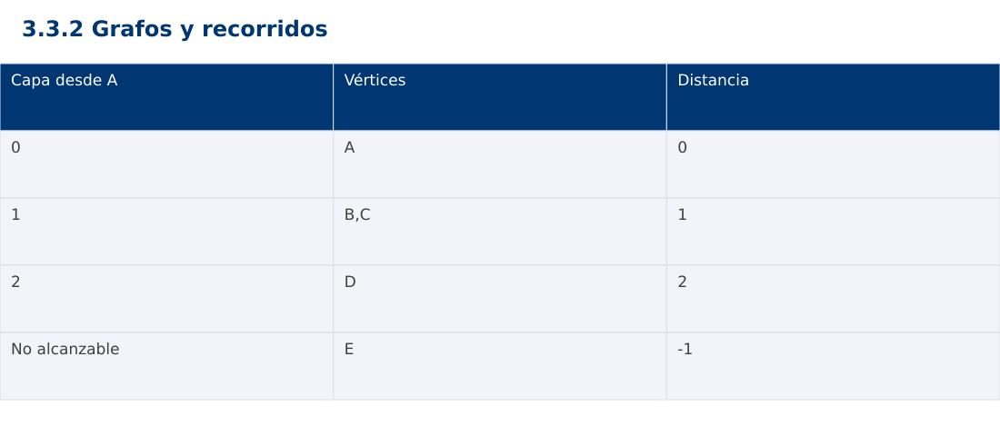

Estructura de Datos
3.3.2 Grafos y recorridos · JavaScript
Ing. Pablo Torres, Mgtr. · Universidad Politécnica Salesiana · Computación · Cuenca
Unidad 3: Estructura de Datos y Grafos
Índice del curso · Presentación Java · Evaluación Moodle
1. Conceptos y ejemplos
Prerrequisitos: variables, condiciones, bucles, funciones y arreglos. Revisa las estructuras lineales antes de este contenido.
1.1 Vértices y aristas
Un grafo modela entidades y relaciones. Puede ser dirigido o no dirigido, ponderado o no ponderado. En esta demostración las aristas no tienen pesos y son no dirigidas: cada enlace se registra en ambas listas de vecinos. La cantidad de vértices es V y la de aristas E. Un vértice aislado también forma parte del grafo y no debe perderse por carecer de aristas.
1.2 Representación
La matriz de adyacencia reserva Θ(V²) posiciones y permite consultar una arista por índice. Una lista de adyacencia reserva Θ(V+E) y facilita enumerar vecinos, especialmente en grafos dispersos. En un grafo no dirigido cada arista aparece dos veces en las listas, lo cual no cambia el orden asintótico. El contrato debe decidir si permite autoaristas y múltiples aristas.
1.3 BFS y distancia mínima
BFS usa una cola y descubre vértices por capas. Se marca un vértice cuando se encola, evitando incorporarlo varias veces. La distancia del vecino nuevo es distancia(actual)+1. Al agotarse la cola se han visitado todos los alcanzables desde el origen. Estas distancias son mínimas en número de aristas para grafos sin pesos; la propiedad no se traslada a pesos arbitrarios.
1.4 DFS y componentes
DFS explora una rama antes de retroceder, usando recursión o una pila explícita. Resulta útil para componentes y análisis estructural. En un grafo con ciclos siempre hace falta registrar visitados. Un recorrido desde un solo origen no cubre componentes desconectadas. Para cubrir todo el grafo, se inicia otro recorrido en cada vértice aún no visitado.
Pseudocódigo de DFS con control de visitados
DFS(u):
marcar u como visitado
registrar u en el orden de exploración
para cada vecino v de u:
si v no está visitado:
predecesor[v] = u
DFS(v)
Este esquema mantiene un conjunto de visitados compartido por todo el recorrido. En el grafo de la demostración, con vecinos en el orden declarado, DFS desde A visita A,B,D,C; BFS visita A,B,C,D. E queda fuera de ambos recorridos porque es un vértice aislado. Los predecesores de DFS reconstruyen un camino válido, que no necesariamente es el más corto. El pseudocódigo complementa la demostración ejecutable de BFS y no resuelve la ampliación de la PC.
1.5 Costo y contratos
Con listas de adyacencia, BFS y DFS completos cuestan Θ(V+E), y sus estructuras de control Θ(V). Con matriz, revisar todos los posibles vecinos cuesta Θ(V²). La demostración ordena vecinos por la forma de construcción para producir una traza reproducible, valida el origen y representa con -1 la distancia de los inalcanzables. No se utiliza -1 para una distancia real.
Traza de referencia
| Capa desde A | Vértices | Distancia |
|---|---|---|
| 0 | A | 0 |
| 1 | B,C | 1 |
| 2 | D | 2 |
| No alcanzable | E | -1 |
La tabla muestra estados o conteos concretos. Reproduce cada transición y comprueba qué propiedad permanece verdadera. Una traza finita ayuda a encontrar errores; la justificación del algoritmo también exige explicar por qué progresa y por qué la condición final satisface el contrato.

Particularidades de JavaScript
JavaScript se ejecuta aquí con Node.js como módulo .mjs. Number solo representa exactamente enteros hasta 2^53-1; factorial usa BigInt y no mezcla su aritmética con Number. Math.floor realiza la división para índices. [...a] es una copia superficial. Map y Set expresan asociaciones y pertenencia. Los errores se verifican con condiciones explícitas, ya que console.assert no sustituye una prueba que detenga el proceso. No se requiere pnpm.
2. Demostración guiada
Problema y contrato: Grafo no dirigido sin pesos. Todas las referencias de vecinos existen como claves. Origen existente obligatorio. Retorna distancia mínima en aristas y -1 para inalcanzables. La cola JS usa índice de frente, sin shift.
- Lee el contrato y predice la salida del caso principal antes de ejecutar.
- Identifica las variables que representan el estado y vincúlalas con la traza de la sección anterior.
- Ejecuta el archivo completo. Las comprobaciones internas detienen el programa si una condición esperada falla.
- Cambia una entrada del bloque de ejecución, predice el resultado y contrástalo. Conserva el núcleo de la demostración como referencia.
Código completo
Este bloque se genera desde ejemplos/demo.mjs mediante scripts/sync-code.py; ese archivo es la fuente del código. La PC tiene otro objetivo y sus casos de aceptación aparecen en la sección 3.
function bfs(graph,start) {
if (!graph.has(start)) throw new RangeError('origen');
const distance=new Map([...graph.keys()].map(v=>[v,-1]));
const queue=[start]; let head=0; distance.set(start,0);
while (head<queue.length) {
const u=queue[head++];
for (const v of graph.get(u)) if (distance.get(v)===-1) {
distance.set(v,distance.get(u)+1); queue.push(v);
}
}
return distance;
}
const graph=new Map([['A',['B','C']],['B',['A','D']],['C',['A','D']],['D',['B','C']],['E',[]]]);
const d=bfs(graph,'A');
if (d.get('D')!==2 || d.get('E')!==-1) throw new Error('BFS');
for (const [key,value] of d) console.log(`${key}:${value}`);
let rejected=false;
try { bfs(graph,'X'); } catch (e) { rejected=e instanceof RangeError; }
if (!rejected) throw new Error('Origen');
Ejecución
Desde esta carpeta 03-data-structures/3.3.2-graphs/js:
node ejemplos/demo.mjs
Salida esperada de la demostración
A:0
B:1
C:1
D:2
E:-1
La salida procede de los datos fijos del bloque de ejecución. Las verificaciones internas también cubren los casos adicionales que se leen en el código. El registro de ejecuciones realizadas se conserva en verificación, separado de estas expectativas.
3. PC — 3.3.2: Grafos y recorridos
Implementa reconstrucción de un camino mínimo sin pesos mediante un mapa de predecesores de BFS. Añade detección de componentes conexas. Documenta cómo resuelves empates entre caminos del mismo largo.
Requisitos de la entrega
- Implementa la actividad en una versión, a tu elección entre Java, Python y JavaScript. Las PL se entregan exclusivamente en Java.
- Separa la lógica del procesamiento de la entrada y la impresión. Documenta tipos, dominio válido, salida y comportamiento de error.
- Conserva los casos de aceptación siguientes y agrega al menos un caso que compruebe el invariante del tema.
- No copies como solución el bloque de demostración: resuelve la ampliación pedida. No se suministra una solución completa de esta PC.
Casos de aceptación de la PC
| Entrada o escenario | Resultado exigido |
|---|---|
| A-B, A-C, B-D, C-D; A a D | camino de longitud 2 |
| E aislado; A a E | sin camino |
| A a A | [A], longitud 0 |
Ejecución y evidencia
Desde la carpeta de tu entrega, ejecuta el programa con node main.mjs. Si divides Java en paquetes, utiliza los comandos de la plantilla del estudiante. Registra entrada, resultado esperado, resultado real y explicación de cualquier diferencia en evidencias/PC3.3.2.md de tu repositorio personal.
Crea commits pequeños: feat(pc3.3.2): implementar contrato, test(pc3.3.2): cubrir casos limite y docs(pc3.3.2): explicar costos. Sustituye los mensajes por descripciones del cambio real. Obtén el hash con git rev-parse HEAD y revisa una etapa con git show HASH. La actividad no necesita continuar un proyecto acumulativo.
Lo esencial
- Un grafo modela entidades y relaciones.
- Con listas de adyacencia, BFS y DFS completos cuestan Θ(V+E), y sus estructuras de control Θ(V).
- Explica el contrato, traza una entrada y justifica tiempo y memoria con las condiciones descritas.
Referencias
- Programa analítico y referencias del docente: correspondencia en el documento docente de este contenido.
- Referencia técnica de JavaScript.
- Bibliografía y análisis de fuentes.